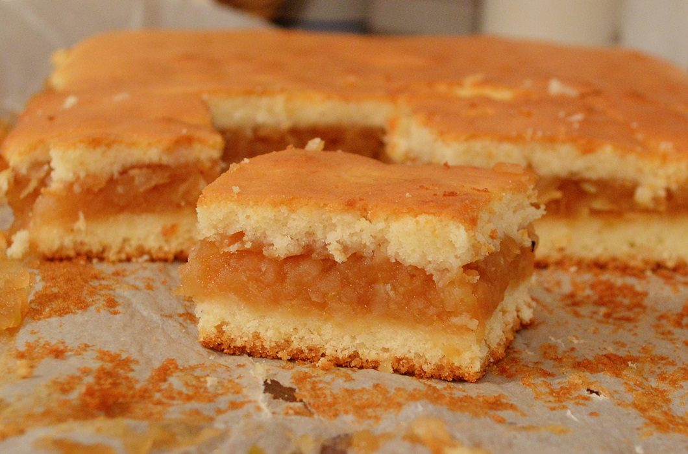

Apple cake recipe

Description:
The traditional Romanian Apple Cake is one of the tastiest cakes in local cuisine, while also being not so time-consuming as most people would think.
It will most definitely be the a favorite with your family, as it is with mine. The main length of the preparation time is cutting and peeling the apples.
Ingredients:
- 5 apples, peeled and cored
- 3 eggs
- 1 and a half cups white sugar
- 3/4 cup vegetable oil
- 1 teaspoon baking soda
- 1 teaspoon ground cinanamon
- 1 tablespoon vanilla extract
- 2 cups all-purpose flour
- 3/4 cup chopped walnuts
Steps:
- Preheat the oven to 350 degrees F (175 degrees C). Grease and flour a 9x13-inch pan. Cut the apples into 1-inch wedges; set aside.
- In a large bowl, whisk eggs and sugar together until blended.
Mix in baking soda, oil, cinnamon, and vanilla.
Stir in flour until just incorporated. Fold in apples and walnuts. Pour batter into the prepared pan.
-
Bake in the preheated oven for 55 minutes, or until a toothpick inserted into the center of the cake comes out clean.
Allow to cool slightly; this cake is best served warm or at room temperature.